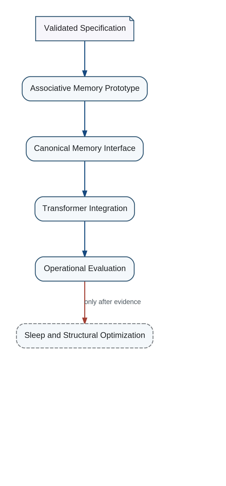

Implementation Sequence

- Restricted YAML Research State
- Atomic and derived Token validation
- Canonical formatting
- Semantic change proposals
- Structural three-way merge with conflict report
- Generated semantic HTML
- Working and long-term memory prototype
- Lossy consolidation and architecture selection
- Communication and clarification pipeline
- Trainable multichannel evaluator
- Hybrid meta-architect
- Cognitive lineage manager
These components are deliberately modular. Their purpose is to create an operational baseline and instrumentation for later integration.